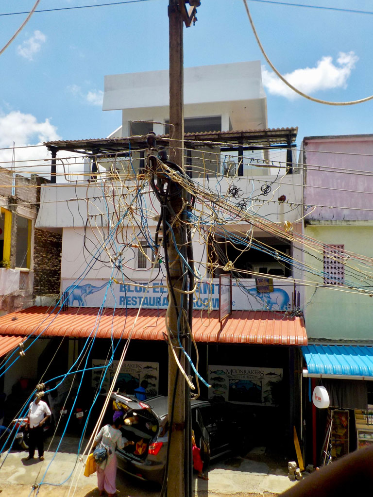
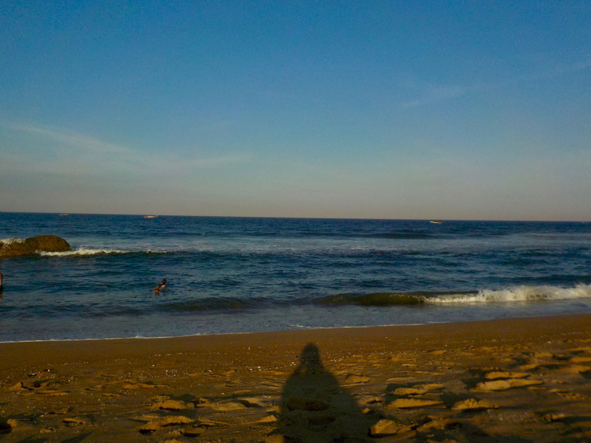

Tamil Nadu / Vers Mahabalipuram
7h30 réveil
8h30 à a réception on demande un tuk tuk pour la station de bus de Brodaway
8h45 A peine descendus du tuk tuk on monte dans un bus pour Kovalam 145R
10h00 Le contrôleur nous indique le second bus à prendre (188)
10H15 dans le deuxième bus pour Mahabalipuram 124R
10H45 descente du bus, on prend un tuk tuk pour une guest house, mais elle est pleine ,le conducteur nous en indique une autre.

11h00 nous posons enfin les sacs.
12h00 grignotage dans un petit restaurant (fried rice, fried rice + egg, veg noodle, lime soda x3, plain soda) 610R
13H00 Après un passage sur le front de mer on rentre se protéger de la chaleur
15h30 je pars en balade dans les rues avoisinantes.
17h30 Direction la plage, E. s’isole du soleil, G. mouille son pantalon. Je me baigne avec K.
18h30 après une bonne douche on part à la recherche d’un endroit ou manger. Nous sommes sur la côte touristique et les prix s’envole dans ce quartier (il aurait fallu prendre un tuk tuk et retourner dans les bouis bouis de la gare routière). Le premier est vraiment trop cher pour nous, on se contente de boire une bière et 2 sodas (400R)
19H00 On teste le Yogi (à peine moins her et portions congrues) currys crevettes + riz, curry poulet + riz, curry poulet + chapati, butter naan, raïta, sodas x 3, lime juice 895R

20h00 retour à l’hôtel, on donne les affaires pour une grande lessive
21h00 extinction des feux, E. et G. se font attaquer par les moustiques, j’accroche la moustiquaire à la fenêtre.